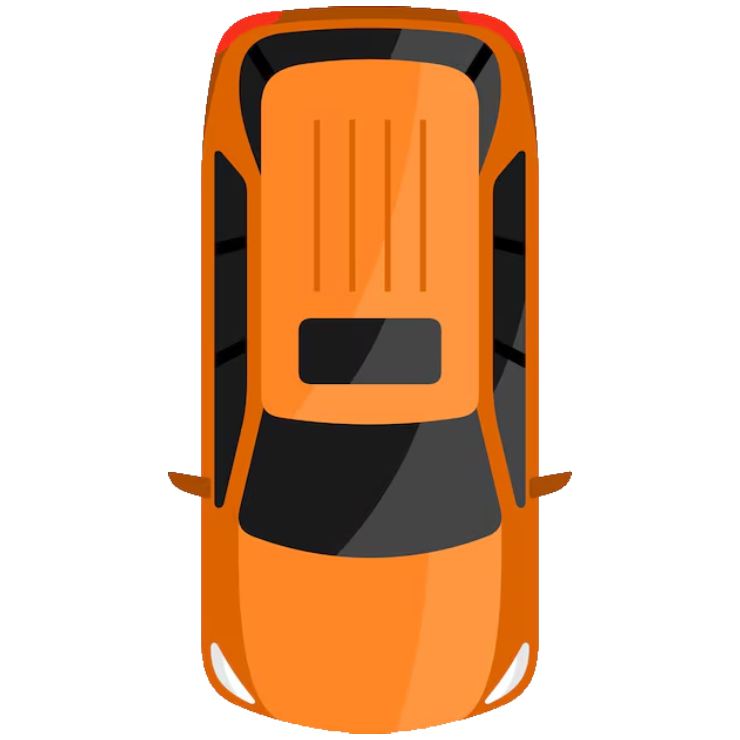
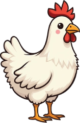

<!doctype html>
<html lang="en">
  <head>
    <meta charset="UTF-8" />
    <meta name="viewport" content="width=device-width, initial-scale=1" />
    <meta name="description" content="Neon Jackpot fictional arcade demo — Chicken Cross" />
    <title>Chicken Cross · Neon Jackpot</title>
    <link rel="stylesheet" href="./shell.css" />
    <link rel="stylesheet" href="./game-frame.css" />
    <style>
      /* ================= STAGE / ROAD ================= */
      .game-box.cc-stage { padding: 0; overflow: hidden; background: #0d1220; }
      .game-box.cc-stage::before { display: none; } /* road gets its own texture instead of the dotted default */

      .cc-road-wrap { position: relative; flex: 1; min-height: 340px; overflow: hidden; }
      .cc-stage.cc-mode-auto .cc-road-wrap { min-height: 220px; }
      .cc-road { position: relative; width: 100%; height: 100%; overflow-x: auto; overflow-y: hidden; -webkit-overflow-scrolling: touch; scrollbar-width: thin; scrollbar-color: rgba(255,255,255,.25) transparent; }
      .cc-road::-webkit-scrollbar { height: 8px; }
      .cc-road::-webkit-scrollbar-track { background: rgba(255,255,255,.03); }
      .cc-road::-webkit-scrollbar-thumb { background: rgba(255,255,255,.22); border-radius: 4px; }
      .cc-road::-webkit-scrollbar-thumb:hover { background: rgba(255,255,255,.35); }
      /* right-edge fade as a visual cue that there's more road to scroll to (e.g. higher
         multiplier manholes further down the lane) — purely decorative, ignores clicks. */
      .cc-road-wrap::after {
        content: ""; position: absolute; top: 0; right: 0; bottom: 8px; width: 46px; z-index: 10;
        background: linear-gradient(to right, transparent, rgba(13,18,32,.85));
        pointer-events: none;
      }

      .cc-track { position: relative; display: flex; align-items: stretch; height: 100%; min-width: max-content; }

      /* crosswalk curb — the starting tile, now part of the scrolling track so it moves
         off-screen with everything else once the chicken starts crossing */
      .cc-curb {
        position: relative; flex: 0 0 128px; height: 100%; z-index: 3;
        background-image: url("./art/crosswalk.png"); background-size: cover; background-position: center;
        pointer-events: none; /* no dashed divider between the curb and the first lane */
      }

      .cc-lane {
        position: relative; width: 132px; flex: 0 0 132px; height: 100%;
        background-image: url("./art/roads.png"); background-repeat: repeat-x; background-size: auto 100%; background-position: left center;
        display: flex; justify-content: center; align-items: flex-end;
      }
      /* lane divider rendered as a background-based dashed line (instead of border-style:
         dashed) so the dash length AND the gap between dashes can be controlled directly —
         spaced much further apart than a default CSS dashed border allows. */
      .cc-lane::after {
        content: ""; position: absolute; top: 0; right: 0; bottom: 0; width: 3px; z-index: 1;
        background-image: repeating-linear-gradient(to bottom, #222847 0 14px, transparent 14px 46px);
      }
      .cc-lane:last-child::after { display: none; }
      /* the very first lane has no divider on its LEFT (that's the curb boundary, not a
         lane-to-lane manhole divider) — achieved by removing the curb's own right border
         instead of giving the first lane a left border, see .cc-curb below */
      /* road tiles butt up seamlessly against each other, offset per-lane so the texture is continuous */
      .cc-lane { background-position-x: calc(var(--lane-i, 0) * -132px); }

      /* manhole marker sits mid-lane and doubles as the multiplier readout */
      .cc-manhole {
        position: absolute; top: 50%; left: 50%; transform: translate(-50%, -50%);
        display: grid; place-items: center; width: 58px; height: 58px; border-radius: 50%;
        background: radial-gradient(circle at 35% 30%, #3a4360, #1c2338 70%); border: 3px solid rgba(255,255,255,.16);
        color: #cdd4e2; font-family: var(--mono); font-weight: 800; font-size: 11px; text-align: center;
        box-shadow: inset 0 3px 6px rgba(0,0,0,.5), 0 4px 10px rgba(0,0,0,.35);
        transition: background .2s ease, border-color .2s ease, color .2s ease, transform .2s ease, box-shadow .2s ease;
        z-index: 2;
      }
      .cc-lane.crossed .cc-manhole { background: radial-gradient(circle at 35% 30%, #ffe27a, #f0a800 70%); border-color: transparent; color: #3a2900; box-shadow: 0 6px 16px rgba(240,168,0,.45); }
      .cc-lane.current .cc-manhole { box-shadow: 0 0 0 4px rgba(92,255,231,.35), inset 0 3px 6px rgba(0,0,0,.5); transform: translate(-50%, -50%) scale(1.08); }
      .cc-lane.bust-fall .cc-manhole { opacity: 0; }
      .cc-lane.bust-car .cc-manhole { background: radial-gradient(circle at 35% 30%, #ff6b7a, #a51d2e 70%); border-color: transparent; color: #fff; }

      /* manhole is clickable in manual mode (jump-to-lane) and in auto mode (pick the
         auto-stop target). Selected (auto target) gets a bright cyan ring; unselected
         but selectable gets a subtle hover affordance. */
      .cc-manhole.selectable { cursor: pointer; }
      .cc-manhole.selectable:hover { border-color: rgba(92,255,231,.55); transform: translate(-50%, -50%) scale(1.05); }
      .cc-manhole.auto-target { box-shadow: 0 0 0 3px #3aa0ff, 0 0 16px rgba(58,160,255,.6), inset 0 3px 6px rgba(0,0,0,.5); border-color: #3aa0ff; }

      /* road-block bar that drops in ABOVE the manhole (not overlapping it) once a lane is safely crossed.
         Positioned further from the manhole (matches reference: block sits near the top edge
         of the lane, clearly separated, not hugging the circle). The drop-in animation only
         plays once (on the lane that just became "current-safe"); once the lane is marked
         .crossed on a later render, the bar renders already in its resting state so it never
         re-triggers the drop animation on subsequent re-renders (e.g. hop of the next lane). */
      .cc-roadblock {
        position: absolute; top: 34px; left: 50%; transform: translate(-50%, 0) rotate(0deg);
        width: 70px; height: 14px; border-radius: 4px; z-index: 3;
        background: repeating-linear-gradient(135deg, #ff9800 0 10px, #1a1a1a 10px 20px);
        border: 2px solid rgba(0,0,0,.4); box-shadow: 0 4px 8px rgba(0,0,0,.4);
      }
      .cc-roadblock.drop-in { animation: cc-roadblock-drop .38s cubic-bezier(.2,.9,.3,1.3) forwards; }
      @keyframes cc-roadblock-drop {
        0% { opacity: 0; transform: translate(-50%, -100px) rotate(-8deg); }
        70% { opacity: 1; transform: translate(-50%, 26px) rotate(3deg); }
        100% { opacity: 1; transform: translate(-50%, 0) rotate(0deg); }
      }

      /* manhole cover that slides open + hole that darkens, for the "fell through" outcome */
      .cc-manhole-lid {
        position: absolute; top: 50%; left: 50%; transform: translate(-50%, -50%); width: 58px; height: 58px; border-radius: 50%;
        background: radial-gradient(circle at 35% 30%, #3a4360, #1c2338 70%); border: 3px solid rgba(255,255,255,.16);
        z-index: 4; transform-origin: 20% 50%;
        animation: cc-lid-open .5s ease forwards .55s;
      }
      @keyframes cc-lid-open { to { transform: translate(-50%, -50%) rotateY(-100deg) scale(.7); opacity: 0; } }
      .cc-manhole-hole {
        position: absolute; top: 50%; left: 50%; transform: translate(-50%, -50%); width: 50px; height: 50px; border-radius: 50%;
        background: radial-gradient(circle, #000 40%, #05070c 100%); z-index: 1;
      }

      .cc-chicken {
        position: absolute; top: 50%; left: 50%; width: 68px; height: 68px;
        /* nudged up-left from dead-center of the manhole; edit the -6px/-6px offsets
           below to fine-tune (negative X = further left, negative Y = further up) */
        transform: translate(calc(-50% - 6px), calc(-50% - 6px));
        transition: left .35s cubic-bezier(.2,.7,.3,1), opacity .3s ease;
        z-index: 5; filter: drop-shadow(0 6px 8px rgba(0,0,0,.5));
      }
      .cc-chicken img { width: 100%; height: 100%; object-fit: contain; display: block; }
      .cc-chicken.hop { animation: cc-hop .35s ease; }
      @keyframes cc-hop { 0% { transform: translate(calc(-50% - 6px), calc(-50% - 6px)); } 45% { transform: translate(calc(-50% - 6px), calc(-50% - 6px - 16px)); } 100% { transform: translate(calc(-50% - 6px), calc(-50% - 6px)); } }

      /* fall-through-manhole animation: lid opens, THEN the chicken visibly drops down
         into the dark hole (staying visible, shrinking with distance) before fading out
         right at the end so it reads as "falling away" rather than "disappearing". */
      .cc-chicken.falling { animation: cc-fall .7s ease-in forwards .55s; z-index: 4; }
      @keyframes cc-fall {
        0%   { transform: translate(calc(-50% - 6px), calc(-50% - 6px)) scale(1) rotate(0deg); opacity: 1; }
        55%  { transform: translate(calc(-50% - 6px), calc(-50% - 6px + 10px)) scale(.7) rotate(180deg); opacity: 1; }
        85%  { transform: translate(calc(-50% - 6px), calc(-50% - 6px + 18px)) scale(.35) rotate(320deg); opacity: 1; }
        100% { transform: translate(calc(-50% - 6px), calc(-50% - 6px + 22px)) scale(.15) rotate(400deg); opacity: 0; }
      }

      /* car-hit animation: car races DOWN the lane (top to bottom, matching the road's
         direction of travel) and the chicken flinches on impact, then is taken out —
         vanishing right as the car passes over it, so it reads as "hit and gone" rather
         than the car merely clipping past a chicken that's still standing there. The
         chicken sits BELOW the car in stacking order at impact (car passes over it). */
      .cc-chicken.hit { animation: cc-hit .5s ease .32s forwards; z-index: 5; }
      @keyframes cc-hit {
        0%   { transform: translate(calc(-50% - 6px), calc(-50% - 6px)) rotate(0deg) scale(1); opacity: 1; }
        22%  { transform: translate(calc(-50% - 6px), calc(-50% - 6px - 10px)) rotate(-18deg) scale(1); opacity: 1; }
        45%  { transform: translate(calc(-50% - 6px), calc(-50% - 6px + 4px)) rotate(14deg) scale(1); opacity: 1; }
        55%  { transform: translate(calc(-50% + 10px), calc(-50% - 6px + 4px)) rotate(30deg) scale(.9); opacity: 1; }
        100% { transform: translate(calc(-50% + 40px), calc(-50% - 6px - 4px)) rotate(70deg) scale(.4); opacity: 0; }
      }

      .cc-car {
        position: absolute; left: 50%; width: 112px; height: 160px; z-index: 6;
        top: -170px; transform: translateX(-50%);
        animation: cc-car-through .55s cubic-bezier(.4,0,.7,1) forwards;
        filter: drop-shadow(0 6px 8px rgba(0,0,0,.55));
      }
      .cc-car img { width: 100%; height: 100%; object-fit: contain; display: block; }
      /* car drives straight through the lane, past the manhole, and off the bottom of the
         screen — it never stops on the manhole. Impact (the chicken flinch) is timed to
         when the car passes the manhole's vertical center, not to the car's own stop. */
      @keyframes cc-car-through { to { top: 130%; transform: translateX(-50%) translateY(-50%); } }

      .cc-cross-wrap { display: flex; justify-content: center; padding: 16px; background: rgba(6,8,14,.4); border-top: 1px solid var(--line); }
      /* result overlay shown briefly OVER the game stage after each instant auto-bet
         round (multiplier on top, total win/loss amount underneath) — mirrors the
         profit-box pattern used elsewhere but as a floating overlay, not a bottom bar. */
      .cc-auto-result-overlay {
        position: absolute; top: 50%; left: 50%; transform: translate(-50%, -50%); z-index: 20;
        display: flex; flex-direction: column; align-items: center; gap: 4px;
        padding: 14px 28px; border-radius: 14px; background: rgba(10,12,20,.88); backdrop-filter: blur(6px);
        border: 1px solid var(--line); box-shadow: 0 20px 50px rgba(0,0,0,.5);
        animation: cc-result-in .25s ease;
      }
      .cc-auto-result-mult { font-family: var(--mono); font-size: 15px; font-weight: 800; color: #cdd4e2; }
      .cc-auto-result-label { font-size: 11px; color: #7c88a0; font-weight: 700; letter-spacing: .02em; text-transform: uppercase; }
      .cc-auto-result-amt { font-family: var(--mono); font-size: 22px; font-weight: 800; }
      .cc-auto-result-overlay.win .cc-auto-result-amt { color: var(--mint, #5cffe7); }
      .cc-auto-result-overlay.win { border-color: rgba(92,255,231,.35); }
      .cc-auto-result-overlay.loss .cc-auto-result-amt { color: #ff6b7a; }
      .cc-auto-result-overlay.loss { border-color: rgba(255,107,122,.35); }
      @keyframes cc-result-in { from { opacity: 0; transform: translate(-50%, -50%) scale(.92); } to { opacity: 1; transform: translate(-50%, -50%) scale(1); } }
      .cc-mode-auto .cc-cross-wrap { padding: 10px 16px; }
      .cc-cross-btn { padding: 15px 54px; color: #fff; background: linear-gradient(120deg, #7c3fd6, #9b5cf0); border: 0; border-radius: 12px; font-size: 14px; font-weight: 800; letter-spacing: -.01em; box-shadow: 0 10px 26px rgba(124,63,214,.35); transition: transform .1s ease, opacity .15s ease; }
      .cc-cross-btn:active { transform: scale(.985); }
      .cc-cross-btn:disabled { color: #6c7488; background: #1b2032; box-shadow: none; cursor: not-allowed; }

      /* ================= BOTTOM CONTROL BAR (replaces the left sidebar for this game) ================= */
      .cc-controls-row { display: flex; align-items: flex-end; gap: 14px; padding: 10px 16px; border-top: 1px solid var(--line); background: rgba(10,12,20,.55); flex-wrap: wrap; }
      .cc-controls-row .cc-field { flex: 1 1 220px; min-width: 200px; }
      .cc-controls-row .cc-field .field-label { margin-bottom: 4px; }
      .cc-place-col { flex: 1 1 260px; min-width: 240px; display: flex; flex-direction: column; }
      .cc-place-col .field-label { margin-bottom: 4px; visibility: hidden; } /* keeps vertical alignment with the other two fields */
      .cc-odds-row { display: flex; align-items: center; justify-content: space-between; padding: 0 4px 4px; font-size: 11px; color: #7c88a0; }
      .cc-odds-row strong { color: #cdd4e2; font-family: var(--mono); }
      .cc-risk-dropdown { position: relative; }
      .cc-risk-dropdown .stats-game-menu button { font-size: 11.5px; }
      /* the risk selector now lives in the bottom controls bar, close to the viewport edge,
         so its dropdown opens UPWARD instead of the shared default (downward) or it gets clipped */
      .cc-risk-dropdown [data-risk-menu] { top: auto; bottom: calc(100% + 6px); max-height: 260px; overflow-y: auto; }
      .cc-cashout-btn { background: linear-gradient(120deg, #3aa0ff, #7ad0ff); box-shadow: 0 10px 26px rgba(58,160,255,.25); }
      .cc-cashout-btn:disabled { color: #6c7488; background: #1b2032; box-shadow: none; }
      .cc-mode-toggle { display: flex; gap: 2px; margin-left: auto; padding: 3px; border-radius: 9px; background: rgba(255,255,255,.05); }
      .cc-mode-toggle button { padding: 7px 16px; font-size: 11.5px; font-weight: 700; color: #7c88a0; background: transparent; border: 0; border-radius: 7px; }
      .cc-mode-toggle button.active { color: #fff; background: linear-gradient(120deg, #3aa0ff, #1f7ee0); }
      .cc-mode-toggle button:disabled { opacity: .45; cursor: not-allowed; }

      /* ================= AUTO MODE PANEL — 3 columns x 3 rows, matching reference:
         row1: [Bet Amount] [Start Auto Bet] [Risk]
         row2: [On Loss]    [On Win]         [Lane Count]
         row3: [Current/Last Profit split]   [Stop Loss/Stop Profit split] [Number of Bets]
         ================= */
      .cc-auto-grid {
        display: grid; grid-template-columns: 1fr 1fr 1fr; gap: 8px 14px;
        padding: 10px 16px; border-top: 1px solid var(--line); background: rgba(10,12,20,.55);
      }
      .cc-auto-field { display: flex; flex-direction: column; gap: 4px; min-width: 0; }
      .cc-auto-field .field-label { font-size: 10.5px; color: #7c88a0; font-weight: 700; line-height: 14px; height: 14px; }
      /* force every control in the auto grid to share the exact same box height so the
         Start Auto Bet button, Risk dropdown, and Bet Amount input all line up evenly */
      .cc-auto-field .bet-input-row,
      .cc-auto-field .stats-game-toggle,
      .cc-auto-field .cc-auto-start-btn,
      .cc-auto-field .place-bet-btn {
        height: 38px; min-height: 38px; max-height: 38px; box-sizing: border-box;
        margin: 0; display: flex; align-items: center;
      }
      .cc-auto-field .stats-game-toggle { width: 100%; justify-content: space-between; padding: 0 10px; }
      .cc-auto-start-btn { align-self: stretch; justify-content: center; }
      .cc-risk-dropdown { display: block; width: 100%; }

      /* On Loss / On Win: "Increase By" label sits left-aligned inside the box, the
         editable % input sits to its right, and the Reset button is a separate control
         BELOW the box (never overlapping the label) that just clears the typed value —
         it is a real button, not a toggle, and the input is always editable. */
      .cc-auto-pct-box {
        display: flex; align-items: center; gap: 6px; background: #171c2e; border: 1px solid rgba(255,255,255,.08);
        border-radius: 7px; padding: 0 8px; min-width: 0; height: 38px; box-sizing: border-box;
      }
      .cc-auto-pct-box .cc-auto-pct-label {
        flex: 1 1 auto; min-width: 0; color: #7c88a0; font-size: 11.5px; font-weight: 600;
        text-align: left; white-space: nowrap; overflow: hidden; text-overflow: ellipsis;
      }
      .cc-auto-pct-box input {
        flex: 0 0 56px; width: 56px; min-width: 0; background: transparent; border: 0; color: #cdd4e2; font-family: var(--mono);
        font-size: 12.5px; padding: 7px 2px; outline: none; text-align: right;
      }
      .cc-auto-pct-box input::placeholder { color: #56607a; text-align: right; }
      .cc-auto-pct-box span.cc-auto-pct-sign { color: #56607a; font-size: 12px; flex: 0 0 auto; }
      .cc-auto-reset-btn {
        margin-top: 4px; width: 100%; height: 24px; padding: 0 10px; font-size: 10.5px; font-weight: 700; color: #cdd4e2;
        background: #232a42; border: 0; border-radius: 6px; white-space: nowrap; cursor: pointer;
      }
      .cc-auto-reset-btn:hover { background: #2b3350; }
      .cc-auto-reset-btn:disabled { opacity: .5; cursor: not-allowed; }

      .cc-auto-num-input {
        background: #171c2e; border: 1px solid rgba(255,255,255,.08); border-radius: 7px;
        color: #cdd4e2; font-family: var(--mono); font-size: 12.5px; padding: 7px 10px; outline: none; width: 100%; height: 38px;
      }
      .cc-auto-num-input::placeholder { color: #56607a; }
      .cc-auto-num-input:disabled { opacity: .55; }

      /* Current Profit / Last Game Profit AND Stop On Loss / Stop On Profit: two equal
         boxes side by side, sized so the pair together matches one normal field's width. */
      .cc-auto-split { display: flex; gap: 8px; }
      .cc-auto-split .cc-auto-field { flex: 1 1 0; min-width: 0; }
      .cc-auto-static {
        display: flex; align-items: center; background: #171c2e; border: 1px solid rgba(255,255,255,.08);
        border-radius: 7px; padding: 7px 10px; font-family: var(--mono); font-size: 12.5px; color: #cdd4e2; height: 38px; box-sizing: border-box;
      }

      .cc-auto-lane-row {
        display: flex; align-items: center; gap: 8px; background: #171c2e; border: 1px solid rgba(255,255,255,.08);
        border-radius: 7px; padding: 0 10px; height: 38px; box-sizing: border-box; position: relative;
      }
      .cc-auto-lane-row strong { font-family: var(--mono); font-size: 12.5px; }
      .cc-auto-lane-row .cc-auto-lane-mult { color: #7c88a0; font-size: 11.5px; font-family: var(--mono); }
      .cc-auto-lane-select {
        position: absolute; inset: 0; opacity: 0; cursor: pointer; width: 100%; height: 100%; border: 0;
      }
      .cc-auto-lane-chevron { margin-left: auto; color: #7c88a0; pointer-events: none; }
      .cc-auto-running-note { grid-column: 1 / -1; font-size: 11px; color: #7c88a0; text-align: center; padding-top: 1px; }

      /* auto mode gets a shorter road so the whole page (game + panel + footer) fits
         without forcing a scroll — manual mode keeps the taller board. */
      /* auto-mode road sizing is set on .cc-road-wrap near the top of this stylesheet */

      @media (max-width: 900px) {
        .cc-lane { width: 100px; flex-basis: 100px; background-position-x: calc(var(--lane-i, 0) * -100px); }
        .cc-manhole { width: 50px; height: 50px; font-size: 10px; }
        .cc-curb { flex-basis: 96px; }
      }

      /* ================= LAYOUT OVERRIDE: controls bar goes BELOW the game box, full width,
         instead of the shared shell's left sidebar. ================= */
      .game-shell { overflow: visible !important; }
      .shell-grid { grid-template-columns: 1fr !important; grid-template-rows: auto 1fr auto auto !important; }
      .title-bar { grid-column: 1 !important; }
      .game-box.cc-stage { grid-row: 2; grid-column: 1; }
      .sidebar.cc-bottom-controls { grid-row: 3; grid-column: 1; border-right: 0; border-top: 1px solid var(--line); padding: 0; overflow: visible; }
      .bottom-bar { grid-row: 4 !important; grid-column: 1 !important; }
    </style>
  </head>
  <body>
    <div class="site-shell">
      <div class="site-grid">
        <div id="site-sidebar"></div>
        <div id="site-topbar"></div>
        <div id="page-content"></div>
      </div>
    </div>
    <script src="./promo-vault.js"></script>
    <script src="https://www.gstatic.com/firebasejs/10.12.0/firebase-app-compat.js"></script>
    <script src="https://www.gstatic.com/firebasejs/10.12.0/firebase-database-compat.js"></script>
    <script src="./chat.js"></script>
    <script src="./shell.js"></script>
    <script src="./games.js"></script>
    <script>
      (() => {
        const GAME_NAME = "Chicken Cross";
        const GAME_ID = "chickencross";

        Shell.mount({ activeTab: "Games" });
        Chat.mount();
        document.addEventListener("nj:animations", (e) => { state.settings.animations = !e.detail; render(); });
        const content = document.getElementById("page-content");
        const svg = Shell.svg;

        // ---------------------------------------------------------------
        // GAME MATH — exact fixed multiplier tables per risk level (matches the
        // house's published paytable exactly, step for step). Survival probability
        // per hop is derived FROM the table (prevMult / nextMult * (1-HouseEdge))
        // rather than the other way around, so the displayed numbers are exact.
        // ---------------------------------------------------------------
        const HOUSE_EDGE = 0.0304; // 3.04% house edge -> 96.96% RTP
        const LANE_W = 132; // must match .cc-lane width in the <style> above
        const CURB_W = 128; // must match .cc-curb flex-basis width above

        const MULT_TABLES = {
          easy: [1.00,1.04,1.09,1.14,1.20,1.26,1.33,1.41,1.50,1.60,1.71,1.85,2.00,2.18,2.40,2.67,3.00,3.43,4.00,4.80,6.00,8.00,12.00,24.00],
          medium: [1.09,1.25,1.43,1.66,1.94,2.28,2.71,3.25,3.94,4.85,6.07,7.72,10.04,13.38,18.40,26.29,39.43,63.09,110.40,220.80,552.00,2208.00],
          hard: [1.20,1.52,1.94,2.51,3.29,4.39,5.95,8.24,11.68,16.98,25.48,39.63,64.40,110.40,202.40,404.80,910.80,2428.80,8500.80,51004.80],
          expert: [1.60,2.74,4.85,8.90,16.98,33.97,71.71,161.35,391.86,1044.96,3134.87,10972.06,47545.60,285273.60,3138009.60],
        };

        // Per-step survival probability for each risk level, derived from the exact
        // multiplier table: p = prevMult * (1 - HouseEdge) / nextMult.
        const RISK_LEVELS = {
          easy:   { label: "Easy" },
          medium: { label: "Medium" },
          hard:   { label: "Hard" },
          expert: { label: "Expert" },
        };
        Object.keys(RISK_LEVELS).forEach((key) => {
          const table = MULT_TABLES[key];
          RISK_LEVELS[key].maxSteps = table.length;
          const first = 1 * (1 - HOUSE_EDGE) / table[0];
          RISK_LEVELS[key].stepProbs = table.map((m, i) => {
            const prev = i === 0 ? 1 : table[i - 1];
            return prev * (1 - HOUSE_EDGE) / m;
          });
          RISK_LEVELS[key].avgStepProb = RISK_LEVELS[key].stepProbs.reduce((a, b) => a + b, 0) / table.length;
        });

        function computeMultipliers(riskKey) {
          return MULT_TABLES[riskKey].slice();
        }

        // Each lane hop is its own independent roll at that step's derived survival
        // probability (from the exact multiplier table), not a shuffled fixed pool.
        function rollLaneOutcomes(riskKey, count) {
          const probs = RISK_LEVELS[riskKey].stepProbs;
          const arr = [];
          for (let i = 0; i < count; i++) arr.push(Math.random() > probs[i]); // true = hazard (busted)
          return arr;
        }

        function round2(n) { return Math.round(n * 100) / 100; }

        // ---------------------------------------------------------------
        // STATE
        // ---------------------------------------------------------------
        const state = {
          betAmount: "1.00",
          risk: "expert",
          riskDropdownOpen: false,
          mode: "manual", // "manual" | "auto"
          round: null, // { risk, betAmount, maxSteps, multipliers, lanes, stepsTaken, status, bustLane, payout }
          busy: false,
          infoOpen: false,
          fairPlayOpen: false,
          settingsOpen: false,
          statsOpen: false,
          statsGame: "all",
          statsGameDropdownOpen: false,
          statsDrag: null,
          statsPos: null,
          favorite: Shell.getFavorites().includes(GAME_ID),
          settings: { animations: !Shell.isAnimationsDisabled(), volume: 100 },

          // manual-mode "auto-cross to lane N" — clicking a manhole while a round is
          // active keeps crossing (via crossLane) up to and including that lane, unless
          // a bust ends it first.
          manualTargetLane: null,

          // auto-mode betting panel
          auto: {
            onLossPct: "",
            onWinPct: "",
            stopOnLoss: "", stopOnProfit: "",
            numBets: "", // "" = infinite
            numBetsRemaining: null, // live countdown while running (mirrors numBets input)
            targetLane: null, // index of manhole to auto-stop at (0-based); null = go to max
            running: false,
            betsDone: 0,
            sessionProfit: 0,
            lastGameProfit: 0,
            baseBet: null, // bet amount captured when the auto session starts, for On Loss/On Win % scaling
            currentBet: null,
          },
        };

        // Restore an in-progress round (e.g. the player navigated away mid-crossing) so a
        // placed bet is never silently forfeited by an accidental page change.
        (function restoreRound() {
          const saved = Shell.loadActiveRound(GAME_ID);
          if (saved && saved.status === "active") {
            state.round = saved;
            state.risk = saved.risk;
            state.betAmount = String(saved.betAmount);
          }
        })();

        function isRoundActive() { return !!(state.round && state.round.status === "active"); }

        // ---------------------------------------------------------------
        // ROUND FLOW
        // ---------------------------------------------------------------
        function placeBet() {
          if (isRoundActive() || state.busy) return;
          const raw = parseFloat(state.betAmount);
          let amt = state.betAmount !== "" && !isNaN(raw) && raw > 0 ? round2(raw) : 0;
          const balance = Shell.getBalance();
          if (amt > 0 && Shell.isBelowMinBet(amt)) { Shell.notify(`Minimum bet is ${Shell.fmtMoney(Shell.MIN_BET)}.`); return; }
          if (amt > 0 && amt > balance) { Shell.notify("Insufficient balance."); return; }

          if (amt > 0) Shell.addBalance(-amt);
          const risk = state.risk;
          const cfg = RISK_LEVELS[risk];
          const round = {
            risk,
            betAmount: amt,
            maxSteps: cfg.maxSteps,
            multipliers: computeMultipliers(risk),
            lanes: rollLaneOutcomes(risk, cfg.maxSteps),
            stepsTaken: 0,
            status: "active",
            bustLane: null,
            bustAnim: null,
            pendingReveal: false,
            payout: null,
          };
          state.round = round;
          Shell.saveActiveRound(GAME_ID, round);
          Shell.playChipSound("place", state.settings.volume);
          render();
        }

        // ---------------------------------------------------------------
        // AUTO MODE ENGINE
        // ---------------------------------------------------------------
        function parsePct(v) { const n = parseFloat(v); return isFinite(n) && n > 0 ? n : 0; }
        function parseCount(v) { const n = parseInt(v, 10); return isFinite(n) && n > 0 ? n : null; }

        function startAutoBetting() {
          if (state.auto.running) { stopAutoBetting(); return; }
          const amt = round2(parseFloat(state.betAmount) || 0);
          if (!(amt > 0)) { Shell.notify("Enter a bet amount."); return; }
          if (amt > Shell.getBalance()) { Shell.notify("Insufficient balance."); return; }
          if (Shell.isBelowMinBet(amt)) { Shell.notify(`Minimum bet is ${Shell.fmtMoney(Shell.MIN_BET)}.`); return; }
          if (isRoundActive()) return;

          state.auto.running = true;
          state.auto.betsDone = 0;
          state.auto.sessionProfit = 0;
          state.auto.lastGameProfit = 0;
          state.auto.baseBet = amt;
          state.auto.currentBet = amt;
          state.auto.numBetsRemaining = parseCount(state.auto.numBets);
          render();
          runNextAutoBet();
        }

        function stopAutoBetting() {
          state.auto.running = false;
          state.auto.numBetsRemaining = null;
          render();
        }

        function runNextAutoBet() {
          if (!state.auto.running) return;

          if (state.auto.numBetsRemaining != null && state.auto.numBetsRemaining <= 0) { stopAutoBetting(); return; }

          const stopLoss = parsePct(state.auto.stopOnLoss);
          if (stopLoss > 0 && -state.auto.sessionProfit >= stopLoss) { stopAutoBetting(); return; }
          const stopProfit = parsePct(state.auto.stopOnProfit);
          if (stopProfit > 0 && state.auto.sessionProfit >= stopProfit) { stopAutoBetting(); return; }

          let amt = round2(state.auto.currentBet || state.auto.baseBet || 0);
          if (amt > Shell.getBalance() || !(amt > 0)) { stopAutoBetting(); return; }

          Shell.addBalance(-amt);
          const risk = state.risk;
          const cfg = RISK_LEVELS[risk];
          const round = {
            risk, betAmount: amt, maxSteps: cfg.maxSteps,
            multipliers: computeMultipliers(risk), lanes: rollLaneOutcomes(risk, cfg.maxSteps),
            stepsTaken: 0, status: "active", bustLane: null, bustAnim: null, pendingReveal: false, payout: null,
          };
          state.round = round;
          state.betAmount = String(amt);

          // Auto mode resolves instantly — no per-lane hopping animation. Roll straight
          // to the outcome (bust before target, or a clean cash-out at the target lane).
          const targetLane = state.auto.targetLane != null ? Math.min(state.auto.targetLane, cfg.maxSteps - 1) : cfg.maxSteps - 1;
          let bustIdx = -1;
          for (let i = 0; i <= targetLane; i++) { if (round.lanes[i]) { bustIdx = i; break; } }

          if (bustIdx !== -1) {
            round.stepsTaken = bustIdx + 1;
            round.bustAnim = BUST_ANIMS[Math.floor(Math.random() * BUST_ANIMS.length)];
            round.bustLane = bustIdx;
            round.status = "busted";
            Shell.addBetEntry({ game: GAME_ID, bet: round.betAmount, won: false, profit: -round.betAmount });
            Shell.clearActiveRound(GAME_ID);
            onAutoRoundResult(false, -round.betAmount);
          } else {
            round.stepsTaken = targetLane + 1;
            const mult = round.multipliers[targetLane];
            const payout = round2(round.betAmount * mult);
            round.status = "cashed";
            round.payout = payout;
            Shell.addBalance(payout);
            Shell.addBetEntry({ game: GAME_ID, bet: round.betAmount, won: true, profit: round2(payout - round.betAmount) });
            Shell.clearActiveRound(GAME_ID);
            Shell.playWinDing(state.settings.volume);
            onAutoRoundResult(true, round2(payout - round.betAmount));
          }

          render();
          afterRoundSettled();
        }

        function onAutoRoundResult(won, profit) {
          state.auto.betsDone += 1;
          if (state.auto.numBetsRemaining != null) state.auto.numBetsRemaining = Math.max(0, state.auto.numBetsRemaining - 1);
          state.auto.sessionProfit = round2(state.auto.sessionProfit + profit);
          state.auto.lastGameProfit = profit;
          const base = state.auto.baseBet || 0;
          if (won) {
            const pct = parsePct(state.auto.onWinPct);
            state.auto.currentBet = pct > 0 ? round2((state.auto.currentBet || base) * (1 + pct / 100)) : base;
          } else {
            const pct = parsePct(state.auto.onLossPct);
            state.auto.currentBet = pct > 0 ? round2((state.auto.currentBet || base) * (1 + pct / 100)) : base;
          }
        }

        // Bust has two possible animations — chosen randomly each time so it doesn't
        // telegraph anything about the hazard itself, purely a visual variety pick.
        const BUST_ANIMS = ["fall", "car"];

        function crossLane() {
          const round = state.round;
          if (!round || round.status !== "active" || state.busy) return;
          state.busy = true;

          // Step 1: hop the chicken forward onto the next manhole (lane not yet resolved).
          round.stepsTaken += 1;
          round.pendingReveal = true;
          render();
          Shell.playChipSound("select", state.settings.volume);

          // Step 2: after the hop lands, reveal what that manhole actually was.
          setTimeout(() => {
            const idx = round.stepsTaken - 1;
            const hazard = round.lanes[idx];
            round.pendingReveal = false;

            if (hazard) {
              round.bustAnim = BUST_ANIMS[Math.floor(Math.random() * BUST_ANIMS.length)];
              round.bustLane = idx;
              round.status = "busted";
              state.manualTargetLane = null;
              Shell.addBetEntry({ game: GAME_ID, bet: round.betAmount, won: false, profit: -round.betAmount });
              Shell.clearActiveRound(GAME_ID);
              render();
              // Hold on the bust animation before re-enabling controls. We deliberately do NOT
              // call render() again here — doing so would rebuild the bust lane's DOM node and
              // restart its fall/hit CSS animation from frame 0, playing it twice. Flipping
              // `busy` and re-rendering just the Cross button in place avoids that.
              setTimeout(() => {
                state.busy = false;
                const btn = document.querySelector("[data-cross]");
                if (btn) { btn.disabled = true; btn.textContent = "Cross"; }
                afterRoundSettled();
              }, 950);
              return;
            }

            if (round.stepsTaken >= round.maxSteps) {
              settleCashOut(round);
              state.busy = false;
              render();
              afterRoundSettled();
              return;
            }

            Shell.saveActiveRound(GAME_ID, round);
            state.busy = false;
            render();

            // Manual "jump to manhole": if the player picked a target lane by clicking a
            // manhole, keep crossing automatically until that lane is reached or a bust ends it.
            if (state.manualTargetLane != null && round.stepsTaken < state.manualTargetLane + 1) {
              setTimeout(crossLane, 260);
            } else if (state.manualTargetLane != null && round.stepsTaken === state.manualTargetLane + 1) {
              state.manualTargetLane = null;
            } else {
              afterRoundSettled();
            }
          }, 380);
        }

        function settleCashOut(round) {
          const mult = round.multipliers[round.stepsTaken - 1];
          const payout = round2(round.betAmount * mult);
          round.status = "cashed";
          round.payout = payout;
          Shell.addBalance(payout);
          Shell.addBetEntry({ game: GAME_ID, bet: round.betAmount, won: true, profit: round2(payout - round.betAmount) });
          Shell.clearActiveRound(GAME_ID);
          Shell.playWinDing(state.settings.volume);
          state.manualTargetLane = null;
        }

        // Called once a round has fully settled (cashed or busted) while running in
        // auto mode, to drive the next queued auto-bet.
        function afterRoundSettled() {
          if (state.mode === "auto" && state.auto.running) {
            // brief pause so the result overlay (multiplier + win/loss amount) is visible
            // before the next instant round fires, then clear the round so the board resets.
            setTimeout(() => {
              state.round = null;
              render();
              setTimeout(runNextAutoBet, 260);
            }, 900);
          }
        }

        function cashOut() {
          const round = state.round;
          if (!round || round.status !== "active" || round.stepsTaken <= 0 || state.busy) return;
          settleCashOut(round);
          render();
          afterRoundSettled();
        }

        // Manual mode: clicking an uncrossed manhole ahead of the current position sets
        // it as an auto-cross target — crossLane() keeps firing until that lane is
        // reached (or a bust ends the round first). Clicking the same target again
        // (or a lane behind the current position) clears the target.
        function selectManualLane(idx) {
          const round = state.round;
          if (!round || round.status !== "active" || state.busy) return;
          if (idx < round.stepsTaken) return; // already past this lane
          if (state.manualTargetLane === idx) {
            state.manualTargetLane = null;
            render();
            return;
          }
          state.manualTargetLane = idx;
          render();
          crossLane();
        }

        // ---------------------------------------------------------------
        // RENDER
        // ---------------------------------------------------------------
        function roadHTML() {
          const round = state.round;
          const riskKey = round ? round.risk : state.risk;
          const cfg = RISK_LEVELS[riskKey];
          const maxSteps = cfg.maxSteps;
          const multipliers = round ? round.multipliers : computeMultipliers(riskKey);
          const stepsTaken = round ? round.stepsTaken : 0;
          const pending = round ? !!round.pendingReveal : false;
          const bustIdx = round && round.status === "busted" ? round.bustLane : null;
          const bustAnim = round ? round.bustAnim : null;
          const busted = round && round.status === "busted";
          // while pending, the just-hopped-to lane hasn't revealed its outcome yet, so
          // treat it as "current" (not yet crossed/bust) until the reveal timeout fires
          const revealedSteps = pending ? stepsTaken - 1 : stepsTaken;
          // only the most-recently-revealed safe lane should play the roadblock drop-in
          // animation; older crossed lanes render the block already in its resting spot
          // so re-renders (e.g. hopping to the next lane) never re-trigger their animation
          const newestSafeIdx = (!pending && round && round.status === "active") ? revealedSteps - 1 : null;

          const lanesHTML = Array.from({ length: maxSteps }, (_, i) => {
            const crossedSafe = round && i < revealedSteps && bustIdx !== i;
            const isBust = bustIdx === i;
            const isCurrent = round && round.status === "active" && i === revealedSteps;
            let cls = "cc-lane";
            if (crossedSafe) cls += " crossed";
            if (isCurrent) cls += " current";
            if (isBust && bustAnim === "fall") cls += " bust-fall";
            if (isBust && bustAnim === "car") cls += " bust-car";

            // manual mode: an active round lets the player click any not-yet-reached manhole
            // to auto-cross toward it. auto mode (no active round, or picking a target before
            // starting): clicking a manhole sets it as the auto-stop target.
            let manholeCls = "cc-manhole";
            const isManualSelectable = state.mode === "manual" && round && round.status === "active" && i >= stepsTaken && !state.busy;
            const isManualTarget = state.mode === "manual" && state.manualTargetLane === i;
            const isAutoSelectable = state.mode === "auto" && !isRoundActive();
            const isAutoTarget = state.mode === "auto" && state.auto.targetLane === i;
            if (isManualSelectable || isAutoSelectable) manholeCls += " selectable";
            if (isManualTarget || isAutoTarget) manholeCls += " auto-target";

            let inner = `<div class="${manholeCls}" data-lane="${i}">${multipliers[i].toFixed(2)}x</div>`;
            if (crossedSafe) inner += `<div class="cc-roadblock ${i === newestSafeIdx ? "drop-in" : ""}"></div>`;
            if (isBust && bustAnim === "fall") inner += `<div class="cc-manhole-hole"></div><div class="cc-manhole-lid"></div>`;
            // the car lives inside its own lane, so it visually falls straight down THAT
            // lane (matching the road's top-to-bottom travel) rather than sliding sideways
            if (isBust && bustAnim === "car") inner += `<div class="cc-car"></div>`;

            return `<div class="${cls}" style="--lane-i:${i};">${inner}</div>`;
          }).join("");

          // chicken position: on the curb (centered on it, x=64 = half the 128px curb width)
          // until the first hop, then on lane i's manhole center (curb width + i*LANE_W + half a lane)
          const chickenSteps = round ? stepsTaken : 0;
          const chickenLeft = chickenSteps > 0 ? CURB_W + (chickenSteps - 1) * LANE_W + LANE_W / 2 : CURB_W / 2;

          let chickenCls = "cc-chicken";
          if (pending) chickenCls += " hop";
          if (busted && bustAnim === "car") chickenCls += " hit";
          if (busted && bustAnim === "fall") chickenCls += " falling";

          return `
            <div class="cc-road-wrap">
              <div class="cc-road" data-cc-road>
                <div class="cc-track">
                  <div class="cc-curb"></div>
                  ${lanesHTML}
                  <div class="${chickenCls}" style="left: ${chickenLeft}px;"></div>
                </div>
              </div>
              ${state.mode === "auto" && round && round.status !== "active" ? `
                <div class="cc-auto-result-overlay ${round.status === "cashed" ? "win" : "loss"}">
                  <span class="cc-auto-result-mult">${round.multipliers[round.stepsTaken - 1].toFixed(2)}x</span>
                  <span class="cc-auto-result-label">${round.status === "cashed" ? "You Won" : "You Lost"}</span>
                  <strong class="cc-auto-result-amt">${round.status === "cashed" ? "+" : "-"}${Shell.fmtMoney(Math.abs(round.status === "cashed" ? round2(round.payout - round.betAmount) : round.betAmount))}</strong>
                </div>
              ` : ""}
            </div>
            <div class="cc-cross-wrap">
              ${state.mode === "auto" ? `
                <div style="font-size:12px;color:#7c88a0;font-family:var(--mono);">
                  ${state.auto.running ? `Auto-betting… ${state.auto.numBetsRemaining != null ? state.auto.numBetsRemaining + " bets left" : state.auto.betsDone + " bets placed"} · Session P/L ${state.auto.sessionProfit >= 0 ? "+" : ""}${Shell.fmtMoney(state.auto.sessionProfit)}` : "Set your auto bet options below, then start."}
                </div>
              ` : `
                <button class="cc-cross-btn" data-cross ${(!round || round.status !== "active" || state.busy) ? "disabled" : ""}>
                  ${state.busy ? "Crossing…" : "Cross"}
                </button>
              `}
            </div>`;
        }

        function riskFieldHTML(riskKey, disabled) {
          const cfg = RISK_LEVELS[riskKey];
          return `
              <div class="cc-field">
                <div class="field-label">Risk</div>
                <div class="cc-risk-dropdown">
                  <button class="stats-game-toggle" data-risk-toggle ${disabled ? "disabled" : ""}>
                    <span>${cfg.label}</span>${svg("chevronDown")}
                  </button>
                  ${state.riskDropdownOpen ? `<div class="stats-game-menu" data-risk-menu>
                    ${Object.entries(RISK_LEVELS).map(([key, c]) => `<button data-risk-option="${key}" class="${riskKey === key ? "active" : ""}">${c.label} — ${Math.round(c.stepProbs[0] * 100)}% survive 1st hop</button>`).join("")}
                  </div>` : ""}
                </div>
              </div>`;
        }

        function manualControlsHTML() {
          const balance = Shell.getBalance();
          const active = isRoundActive();
          const round = state.round;
          const riskKey = active ? round.risk : state.risk;
          const mults = active ? round.multipliers : computeMultipliers(riskKey);
          const betRaw = parseFloat(state.betAmount);
          const hasBet = state.betAmount !== "" && !isNaN(betRaw) && betRaw > 0;
          const insufficientBalance = !active && hasBet && betRaw > balance;

          const currentMult = active && round.stepsTaken > 0 ? round.multipliers[round.stepsTaken - 1] : null;
          const nextOdds = active
            ? (round.stepsTaken < round.maxSteps ? round.multipliers[round.stepsTaken] : mults[mults.length - 1])
            : (mults[0] || 0);
          const cashoutAmt = currentMult != null ? round2(round.betAmount * currentMult) : 0;

          return `
            <div class="cc-controls-row">
              <div class="cc-field">
                <div class="field-label">Bet Amount</div>
                <div class="bet-input-row">
                  <span class="prefix">$</span>
                  <input type="text" inputmode="decimal" placeholder="0.00" value="${state.betAmount}" data-bet-input class="${insufficientBalance ? "error" : ""}" ${active ? "disabled" : ""}>
                  <div class="bet-quick">
                    <button data-half ${active ? "disabled" : ""}>½</button>
                    <button data-double-bet ${active ? "disabled" : ""}>2×</button>
                  </div>
                </div>
                ${insufficientBalance ? `<div class="balance-error">Insufficient balance</div>` : ""}
              </div>

              <div class="cc-place-col">
                <div class="field-label">&nbsp;</div>
                <div class="cc-odds-row">
                  <span>${active ? "Click a manhole ahead to auto-cross to it" : "Enter Bet Amount For Real Play"}</span>
                  <strong>${nextOdds ? nextOdds.toFixed(2) + "x" : "0x"}</strong>
                </div>
                ${active ? `
                  <button class="place-bet-btn cc-cashout-btn" data-cashout ${round.stepsTaken <= 0 ? "disabled" : ""}>
                    ${round.stepsTaken > 0 ? `Cash Out — ${Shell.fmtMoney(cashoutAmt)}` : "Cross once to unlock Cash Out"}
                  </button>
                ` : `
                  <button class="place-bet-btn ${hasBet ? "" : "demo"}" data-place ${insufficientBalance ? "disabled" : ""}>${hasBet ? "Place Bet" : "Place Demo Bet"}</button>
                `}
              </div>

              ${riskFieldHTML(riskKey, active)}
            </div>`;
        }

        function autoControlsHTML() {
          const balance = Shell.getBalance();
          const running = state.auto.running;
          const insufficientBalance = !running && (parseFloat(state.betAmount) || 0) > balance;
          const a = state.auto;
          const lastProfit = a.lastGameProfit != null ? a.lastGameProfit : 0;

          return `
            <div class="cc-auto-grid">
              <div class="cc-auto-field">
                <div class="field-label">Bet Amount</div>
                <div class="bet-input-row">
                  <span class="prefix">$</span>
                  <input type="text" inputmode="decimal" placeholder="0.00" value="${state.betAmount}" data-bet-input class="${insufficientBalance ? "error" : ""}" ${running ? "disabled" : ""}>
                  <div class="bet-quick">
                    <button data-half ${running ? "disabled" : ""}>½</button>
                    <button data-double-bet ${running ? "disabled" : ""}>2×</button>
                  </div>
                </div>
              </div>

              <div class="cc-auto-field">
                <div class="field-label">&nbsp;</div>
                <button class="place-bet-btn cc-auto-start-btn ${running ? "cc-cashout-btn" : ""}" data-auto-start ${insufficientBalance && !running ? "disabled" : ""}>
                  ${running ? "Stop Auto Bet" : "Start Demo Auto Bet"}
                </button>
              </div>

              ${riskFieldHTML(state.risk, running)}

              <div class="cc-auto-field">
                <div class="field-label">On Loss</div>
                <div class="cc-auto-pct-box">
                  <span class="cc-auto-pct-label">Increase By</span>
                  <input type="text" inputmode="decimal" placeholder="0" value="${a.onLossPct}" data-auto-onloss-pct ${running ? "disabled" : ""}>
                  <span class="cc-auto-pct-sign">%</span>
                </div>
                <button class="cc-auto-reset-btn" data-auto-onloss-reset ${running ? "disabled" : ""}>Reset</button>
              </div>

              <div class="cc-auto-field">
                <div class="field-label">On Win</div>
                <div class="cc-auto-pct-box">
                  <span class="cc-auto-pct-label">Increase By</span>
                  <input type="text" inputmode="decimal" placeholder="0" value="${a.onWinPct}" data-auto-onwin-pct ${running ? "disabled" : ""}>
                  <span class="cc-auto-pct-sign">%</span>
                </div>
                <button class="cc-auto-reset-btn" data-auto-onwin-reset ${running ? "disabled" : ""}>Reset</button>
              </div>

              <div class="cc-auto-field">
                <div class="field-label">Lane Count</div>
                <div class="cc-auto-lane-row">
                  <strong>${a.targetLane != null ? a.targetLane + 1 : RISK_LEVELS[state.risk].maxSteps}</strong>
                  <span class="cc-auto-lane-mult">${(a.targetLane != null ? MULT_TABLES[state.risk][a.targetLane] : MULT_TABLES[state.risk][MULT_TABLES[state.risk].length - 1]).toFixed(2)}x</span>
                  <span class="cc-auto-lane-chevron">${svg("chevronDown")}</span>
                  <select class="cc-auto-lane-select" data-auto-lane-select ${running ? "disabled" : ""}>
                    <option value="">Max (${RISK_LEVELS[state.risk].maxSteps})</option>
                    ${MULT_TABLES[state.risk].map((m, i) => `<option value="${i}" ${a.targetLane === i ? "selected" : ""}>Lane ${i + 1} — ${m.toFixed(2)}x</option>`).join("")}
                  </select>
                </div>
              </div>

              <div class="cc-auto-split">
                <div class="cc-auto-field">
                  <div class="field-label">Current Profit</div>
                  <div class="cc-auto-static">${Shell.fmtMoney(a.sessionProfit || 0)}</div>
                </div>
                <div class="cc-auto-field">
                  <div class="field-label">Last Game Profit</div>
                  <div class="cc-auto-static">${Shell.fmtMoney(lastProfit)}</div>
                </div>
              </div>

              <div class="cc-auto-split">
                <div class="cc-auto-field">
                  <div class="field-label">Stop On Loss</div>
                  <input type="text" inputmode="decimal" class="cc-auto-num-input" placeholder="0.00" value="${a.stopOnLoss}" data-auto-stop-loss ${running ? "disabled" : ""}>
                </div>
                <div class="cc-auto-field">
                  <div class="field-label">Stop On Profit</div>
                  <input type="text" inputmode="decimal" class="cc-auto-num-input" placeholder="0.00" value="${a.stopOnProfit}" data-auto-stop-profit ${running ? "disabled" : ""}>
                </div>
              </div>

              <div class="cc-auto-field">
                <div class="field-label">Number of Bets</div>
                <input type="text" inputmode="numeric" class="cc-auto-num-input" placeholder="Infinite" value="${running && a.numBetsRemaining != null ? a.numBetsRemaining : a.numBets}" data-auto-num-bets ${running ? "disabled" : ""}>
              </div>
            </div>`;
        }

        function controlsHTML() {
          return state.mode === "auto" ? autoControlsHTML() : manualControlsHTML();
        }

        function render() {
          const balance = Shell.getBalance();

          content.innerHTML = `
            <div class="game-page">
              <div class="game-shell">
                <div class="shell-grid">

                  <header class="title-bar">
                    <button class="game-icon-btn hover-tip" data-hover-tip="Game info" data-info>${svg("safe")}</button>
                    <div class="title-name">${GAME_NAME}</div>
                    <button class="fair-play-btn" data-fair-play>${svg("safe")} Fair Play</button>
                  </header>

                  <section class="game-box cc-stage ${state.mode === "auto" ? "cc-mode-auto" : ""}">${roadHTML()}</section>

                  <aside class="sidebar cc-bottom-controls">${controlsHTML()}</aside>

                  <footer class="bottom-bar">
                    <div class="bottom-icons">
                      <div style="position:relative;">
                        <button class="bottom-icon-btn ${state.settingsOpen ? "active" : ""}" data-settings-toggle title="Settings">${svg("settings")}</button>
                        ${state.settingsOpen ? `
                        <div class="popover" data-settings-popover>
                          <div class="popover-title">Game Settings</div>
                          <div class="popover-row"><span>Animations</span><button class="switch ${state.settings.animations ? "on" : ""}" data-toggle-setting="animations" ${Shell.isAnimationsDisabled() ? "disabled" : ""}></button></div>
                          <div class="volume-row"><span>Volume — ${state.settings.volume}%</span><input type="range" min="0" max="100" value="${state.settings.volume}" data-volume-slider></div>
                        </div>` : ""}
                      </div>
                      <button class="bottom-icon-btn ${state.favorite ? "fav-on" : ""}" data-fav-toggle title="Favorite">${svg("heart")}</button>
                      <button class="bottom-icon-btn ${state.statsOpen ? "active" : ""}" data-stats-toggle title="Live stats">${svg("activity")}</button>
                    </div>
                    <div class="bottom-logo">Neon Jackpot</div>
                    <div class="cc-mode-toggle">
                      <button class="${state.mode === "manual" ? "active" : ""}" type="button" data-mode="manual" ${isRoundActive() || state.auto.running ? "disabled" : ""}>Manual</button>
                      <button class="${state.mode === "auto" ? "active" : ""}" type="button" data-mode="auto" ${isRoundActive() || state.auto.running ? "disabled" : ""}>Auto</button>
                    </div>
                  </footer>
                </div>

                ${Shell.statsPanelHTML(state, GAME_ID, GAME_NAME)}
              </div>
            </div>

            ${state.infoOpen ? `
            <div class="modal-overlay" data-info-overlay>
              <div class="modal-box">
                <div class="modal-head"><h3>${GAME_NAME}</h3><button class="modal-close" data-modal-close>${svg("x")}</button></div>
                <p>Guide the chicken across the road. Each lane you cross safely boosts your
                multiplier — cash out any time after your first successful crossing to bank the
                win, or keep going for a bigger payout. Land on a hazard lane and the round ends
                immediately, forfeiting the bet.</p>
                <p>Risk level sets your odds of clearing any single lane: Easy survives about 9
                in 10 hops (small, steady multiplier growth), Expert survives roughly 1 in 4
                (small early steps, huge multipliers if you keep clearing lanes). Reaching the
                final lane on any risk level cashes you out automatically at the max multiplier.</p>
                <div class="modal-stats">
                  <div><span>House Edge</span><strong>3.04%</strong></div>
                  <div><span>RTP</span><strong>96.96%</strong></div>
                </div>
              </div>
            </div>` : ""}

            ${state.fairPlayOpen ? `
            <div class="modal-overlay" data-fair-play-overlay>
              <div class="modal-box">
                <div class="modal-head"><h3>${svg("safe")} Fair Play</h3><button class="modal-close" data-modal-close>${svg(("x"))}</button></div>
                <p>Every lane hop is its own independent roll at your chosen risk level's survival
                probability — not drawn from a fixed pool. Clearing lanes back to back compounds
                those odds together: at an 80% per-lane survival rate, clearing 3 lanes in a row
                is 0.80³ = 51.2%, and 5 in a row is 0.80⁵ = 32.7%. The posted multiplier table
                tracks that shrinking survival chance step for step, so there's no hidden roll
                that could ever disagree with what's on screen.</p>
                <p>Each step's multiplier compounds as <code>previous multiplier × (1 − house
                edge) ÷ survival probability</code>. Because survival probability is a fraction
                less than 1, every successful crossing multiplies your payout further. House edge
                is a flat 3.04%, for a 96.96% return to player.</p>
                <div class="modal-stats">
                  <div><span>House Edge</span><strong>3.04%</strong></div>
                  <div><span>RTP</span><strong>96.96%</strong></div>
                </div>
                <div class="seed-note">This is a demo — nothing here affects real outcomes.</div>
              </div>
            </div>` : ""}
          `;

          bind();
          followChickenScroll();
        }

        // Keeps the chicken roughly in view as it hops forward, using native scrolling
        // (scrollLeft) instead of a JS-driven transform — this way the player can still
        // freely scroll the road by hand at any time (e.g. to reach and click a
        // higher-multiplier manhole further down the lane) without fighting the game.
        let lastFollowedSteps = -1;
        function followChickenScroll() {
          const roadEl = document.querySelector("[data-cc-road]");
          if (!roadEl) { lastFollowedSteps = -1; return; }
          const round = state.round;
          const steps = round ? round.stepsTaken : 0;
          // only auto-scroll when the chicken has actually moved to a new lane since the
          // last render — re-renders from unrelated UI (e.g. opening the risk dropdown)
          // must never yank the view back to the chicken.
          if (steps === lastFollowedSteps) return;
          lastFollowedSteps = steps;
          const chickenLeft = steps > 0 ? CURB_W + (steps - 1) * LANE_W + LANE_W / 2 : CURB_W / 2;
          const anchor = 220; // keep the chicken roughly this far from the left edge of the viewport
          const target = Math.max(0, chickenLeft - anchor);
          roadEl.scrollTo({ left: target, behavior: steps > 0 ? "smooth" : "auto" });
        }

        // ---------------------------------------------------------------
        // BIND
        // ---------------------------------------------------------------
        function refocus(sel) {
          const el = document.querySelector(sel);
          if (el) { el.focus(); const v = el.value; el.value = ""; el.value = v; }
        }

        function bind() {
          document.querySelector("[data-place]")?.addEventListener("click", placeBet);
          document.querySelector("[data-cross]")?.addEventListener("click", crossLane);
          document.querySelector("[data-cashout]")?.addEventListener("click", cashOut);

          document.querySelectorAll("[data-mode]").forEach((btn) => btn.addEventListener("click", () => {
            if (isRoundActive() || state.auto.running) return;
            state.mode = btn.dataset.mode;
            state.manualTargetLane = null;
            // a busted/cashed round from the previous mode should not linger on screen —
            // switching modes should always start from a clean board.
            if (state.round && state.round.status !== "active") state.round = null;
            render();
          }));

          document.querySelectorAll(".cc-manhole[data-lane]").forEach((el) => el.addEventListener("click", () => {
            const idx = parseInt(el.dataset.lane, 10);
            if (state.mode === "manual") {
              selectManualLane(idx);
            } else if (state.mode === "auto" && !isRoundActive()) {
              state.auto.targetLane = state.auto.targetLane === idx ? null : idx;
              render();
            }
          }));

          document.querySelector("[data-auto-start]")?.addEventListener("click", startAutoBetting);
          document.querySelector("[data-auto-lane-select]")?.addEventListener("change", (e) => {
            const v = e.target.value;
            state.auto.targetLane = v === "" ? null : parseInt(v, 10);
            render();
          });
          document.querySelector("[data-auto-onloss-reset]")?.addEventListener("click", () => { state.auto.onLossPct = ""; render(); });
          document.querySelector("[data-auto-onwin-reset]")?.addEventListener("click", () => { state.auto.onWinPct = ""; render(); });
          document.querySelector("[data-auto-onloss-pct]")?.addEventListener("input", (e) => { state.auto.onLossPct = e.target.value.replace(/[^0-9.]/g, ""); render(); refocus("[data-auto-onloss-pct]"); });
          document.querySelector("[data-auto-onwin-pct]")?.addEventListener("input", (e) => { state.auto.onWinPct = e.target.value.replace(/[^0-9.]/g, ""); render(); refocus("[data-auto-onwin-pct]"); });
          document.querySelector("[data-auto-stop-loss]")?.addEventListener("input", (e) => { state.auto.stopOnLoss = e.target.value.replace(/[^0-9.]/g, ""); render(); refocus("[data-auto-stop-loss]"); });
          document.querySelector("[data-auto-stop-profit]")?.addEventListener("input", (e) => { state.auto.stopOnProfit = e.target.value.replace(/[^0-9.]/g, ""); render(); refocus("[data-auto-stop-profit]"); });
          document.querySelector("[data-auto-num-bets]")?.addEventListener("input", (e) => { state.auto.numBets = e.target.value.replace(/[^0-9]/g, ""); render(); refocus("[data-auto-num-bets]"); });

          const betInput = document.querySelector("[data-bet-input]");
          betInput?.addEventListener("input", (e) => {
            state.betAmount = e.target.value.replace(/[^0-9.]/g, "");
            render();
            refocus("[data-bet-input]");
          });
          document.querySelector("[data-half]")?.addEventListener("click", () => {
            const b = parseFloat(state.betAmount) || 0;
            state.betAmount = (b / 2).toFixed(2);
            render();
          });
          document.querySelector("[data-double-bet]")?.addEventListener("click", () => {
            const b = parseFloat(state.betAmount) || 0;
            state.betAmount = Math.min(b * 2 || 0, Shell.getBalance()).toFixed(2);
            render();
          });

          document.querySelector("[data-risk-toggle]")?.addEventListener("click", (e) => {
            e.stopPropagation();
            state.riskDropdownOpen = !state.riskDropdownOpen;
            render();
          });
          document.querySelectorAll("[data-risk-option]").forEach((btn) => btn.addEventListener("click", (e) => {
            e.stopPropagation();
            if (isRoundActive()) return;
            state.risk = btn.dataset.riskOption;
            state.riskDropdownOpen = false;
            render();
          }));

          document.querySelector("[data-info]")?.addEventListener("click", () => { state.infoOpen = true; render(); });
          document.querySelector("[data-fair-play]")?.addEventListener("click", () => { state.fairPlayOpen = true; render(); });
          document.querySelectorAll("[data-modal-close]").forEach((btn) => btn.onclick = () => { state.infoOpen = false; state.fairPlayOpen = false; render(); });
          document.querySelector("[data-info-overlay]")?.addEventListener("click", (e) => { if (e.target === e.currentTarget) { state.infoOpen = false; render(); } });
          document.querySelector("[data-fair-play-overlay]")?.addEventListener("click", (e) => { if (e.target === e.currentTarget) { state.fairPlayOpen = false; render(); } });

          document.querySelector("[data-settings-toggle]")?.addEventListener("click", (e) => { e.stopPropagation(); state.settingsOpen = !state.settingsOpen; render(); });
          document.querySelectorAll("[data-toggle-setting]").forEach((btn) => btn.onclick = (e) => { e.stopPropagation(); const key = btn.dataset.toggleSetting; state.settings[key] = !state.settings[key]; render(); });
          document.querySelector("[data-volume-slider]")?.addEventListener("input", (e) => { state.settings.volume = parseInt(e.target.value, 10); });

          document.querySelector("[data-fav-toggle]")?.addEventListener("click", () => {
            Shell.toggleFavorite(GAME_ID);
            state.favorite = Shell.getFavorites().includes(GAME_ID);
            render();
          });

          document.querySelector("[data-stats-toggle]")?.addEventListener("click", () => { state.statsOpen = !state.statsOpen; render(); });
          Shell.bindStatsPanel(state, render);

          document.addEventListener("click", (e) => {
            if (state.settingsOpen && !e.target.closest("[data-settings-popover]") && !e.target.closest("[data-settings-toggle]")) {
              state.settingsOpen = false; render();
            }
            if (state.riskDropdownOpen && !e.target.closest("[data-risk-menu]") && !e.target.closest("[data-risk-toggle]")) {
              state.riskDropdownOpen = false; render();
            }
          }, { once: true });
        }

        Shell.attachStatsPanelDrag(state, render);

        render();
      })();
    </script>
  </body>
</html>
